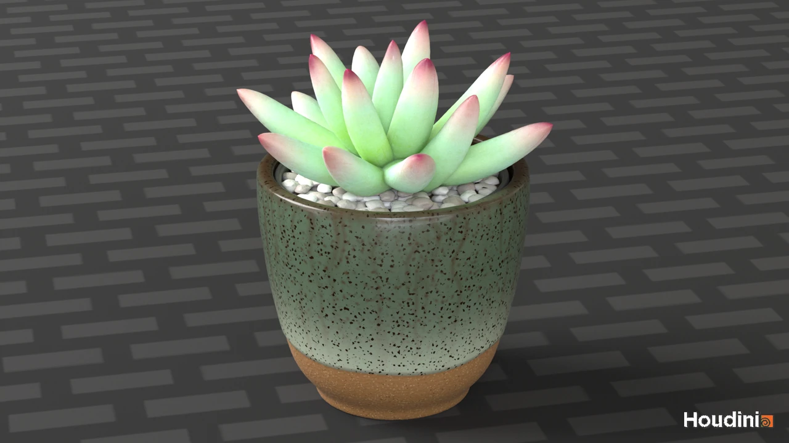

Case Study · 2026
Cactus Still Life
A stylized cactus study combining procedural form, controlled repetition, material response, and presentation lighting.
RoleProcedural Modeling & Shading
ToolsHoudini
Date2026

01 · Form
A modular organic subject
Repeated leaf forms are arranged into a readable succulent silhouette while variation in scale and rotation avoids mechanical uniformity.
02 · Surface
Balancing stylization and material response
The plant and ceramic pot use distinct roughness, color, and highlight behavior to separate soft organic forms from the harder container.
03 · Presentation
A compact look-development study
Neutral lighting and a simple environment keep the focus on silhouette, material breakup, and procedural repetition.
Next ProjectEmpty Frames
↗